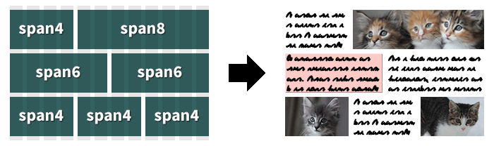

ptb/flexgrid is a next-generation web page layout framework based on flexbox: the CSS Flexible Box Layout Module. It uses the same responsive 12 column grid and CSS class names as Bootstrap.
A customized version of Modernizr is used to detect support for flexbox. The flexbox layout is supported on Chrome, all versions of iOS, Safari 3+, IE 10+, Opera 12.10+, and Firefox 22+. Other browsers get the fluid Bootstrap 3 layout, except Internet Explorer 6 and 7 which use a fixed layout.
Unlike other frameworks, it is just a grid, and thus requires only 1594 bytes for flexgrid.css and 2068 bytes for modernizr.js; with gzip both together are less than 1.67k! A display vs. source re-ordering variant is available as an option.
A demo and source code are available. Suggestions for improvement are welcome!

I want a simple CSS grid that uses flexbox.
Most of my web projects require a grid – a method to arrange content into multiple rows and columns.
Many CSS frameworks include a grid in addition to a CSS reset, shiny buttons, and fancy typography.
But I don't want a Swiss Army knife, I just want a grid. Something simple, fast, and easily understood.
This project is a modern CSS grid that is designed to do one thing and do it well.
Flexbox was designed to solve the problem of web page layout. I want to help push the web forward.
I believe flexbox is ready.
Understanding Flexbox
W3C Flexbox Specifications
Web Browser Documentation
More than 17 years ago, <table> elements were (ab)used for web page layout. But just as using a spreadsheet isn't the best tool for desktop publishing, better ways of arranging content were developed using CSS.
The best tool available in early versions of CSS was to float a <div> of content, but that had issues in that it it took those blocks out of the regular flow of the page. Over the years, several were to contain float-ed elements. Generally known as "clearfix hacks" they are used in most current CSS grid frameworks.
With flexbox, floats and clearfix hacks are not necessary.
The Many Versions of Flexbox
Flexbox is almost a decade old. Safari was the first major browser to ship flexbox in 2003 with version 1.1. Firefox 2.0 followed in 2006, and it has continued to be refined since.
The first working draft of flexbox was published in July 2009. This is the syntax that Firefox supports and Safari had been supporting for over 5 years including in the original iPhone.
The second significant working draft was published in March 2012. This is the syntax that Internet Explorer 10 uses. This is sometimes called the "2011 tweener" syntax.
The candidate recommendation syntax was published in September 2012, although it continues to be refined.
Although flexbox is more capable than existing CSS solutions, for this project I've chosen to simply achieve parity with other float-based grid frameworks. My goal is to simply broaden exposure to flexbox so more people become familiar with it.
Bootstrap
Bootstrap is an amazing framework. It enables fast creation of well styled web sites and web applications. But Bootstrap, by default, is 100k! If you like the Bootstrap grid, but want just the grid, this project is for you.
In fact, most of the initial code was extracted from Bootstrap 3. (Don't worry, that's allowed by the Bootstrap license.)
Just like with the new Bootstrap 3 fluid grid, this framework is responsive in that it resizes automatically at widths of 768 pixels, 992 pixels, and 1200 pixels.
By design, this grid will collapse into a single column of content below 768 pixels in width. Styling for smartphones is done separately.
For those projects which won't be able to adopt Bootstrap 3 because of the decision to drop support for Internet Explorer 7, I'm hoping this grid will be a drop-in (loaded after Bootstrap) solution.
Modernizr
Modernizr is a JavaScript library that detects HTML5 and CSS3 features in the user's web browser. In this project it is specifically used to detect support for flexbox.
In modern browsers that support flexbox, Modernizr will add class='flexbox' or class='webkitbox' to the <html> element. This will cause certain CSS flexbox properties to be set or not.
In browsers which do not support flexbox, Modernizr will add class='no-flexbox' and class='no-webkitbox' to the <html> element. This will trigger the float-based Bootstrap 3 fluid layout instead of the flexbox layout.
Modernizer is very configurable. The customized build included in this project had the following options enabled:
Flexible Box ModelFlexbox LegacyAdd CSS Classes
An different optional build also enables support for HTML5 elements with printing support.
Specific Changes to Modernizr
I made several changes to Modernizr after customizing the build. Rather than test for any support for the legacy 2009 flexbox syntax, I chose to test for WebKit specifically. This avoids the Firefox issues with percentage widths and others (see below).
To make these changes yourself to your own custom build, do a find and replace or run the sed command listed in your terminal.
Find and Replace
flexWrap→flexDirectionflexboxlegacy→webkitboxboxDirection→WebkitBoxFlexhgroup,nav→hgroup,main,navhgroup mark→hgroup main mark
sed -e 's/flexWrap/flexDirection/' \
-e 's/flexboxlegacy/webkitbox/' \
-e 's/boxDirection/WebkitBoxFlex/' \
-e 's/hgroup,nav/hgroup,main,nav/' \
-e 's/hgroup mark/hgroup main mark/' \
-i '' modernizr.jsGoogle Chrome
Chrome has supported the working draft flexbox syntax since its initial release in 2008. Starting with Chrome 21 in July 2012, it also supports the candidate recommendation syntax. With either syntax variant, Chrome requires the -webkit- prefix for all flexbox properties.
Internet Explorer
Internet Explorer 10 supports flexbox using the March 2012 working draft syntax with the -ms- prefix for all properties.
Internet Explorer 8 and 9 do not support flexbox so will use the float-based Bootstrap 3 fluid layout. Media queries are used throughout this project to adapt to different window sizes without changing the content itself. Since IE 8 does not natively support media queries, respond.js is included to enable support.
Although market share for Internet Explorer 6 and 7 is now below one percent, there are projects which will require support for these ancient browsers. In an optional file, I've included a simple fixed grid which will only apply to IE 6 and 7. Be aware, that this is not a robust solution as it will not support nested grids. You may wish to consider leaving old IE behind and not include this file.
Mozilla Firefox
Firefox has supported the working draft flexbox syntax since version 2.0 in 2006 with the -moz- prefix for all properties. Unfortunately, the candidate recommendation syntax will not be enabled by default until Firefox 22 in June 2013.
Unfortunately Firefox has several non-trivial issues with its current working draft flexbox implementation:
- percentage widths are ignored on flexbox items
- items may expand larger than the defined width
- unless a width is set,
display: -moz-boxbehaves like-moz-inline-box
Because of these issues, I've changed the default Modernizr code to exclude Firefox from testing positive for flexbox support. Until version 22, it will use the float-based Bootstrap 3 fluid layout instead of the flexbox layout.
To test flexbox support on Firefox today, type about:config, in the URL bar and click enter. Accept the warning then search for "flexbox". Double-click the "layout.css.flexbox.enabled" row to switch the setting to true.
Safari and iOS
Since October 2003, Safari has supported the working draft flexbox syntax. Initially, versions 1.1 and 2.0 required the -khtml- prefix, but starting with Safari 3.0 the prefix was changed to -webkit-. All versions of Safari since and up to 6.0, and all versions of iOS support flexbox using -webkit- prefixes using the 2009 syntax.
Recent Webkit Nightly builds also support the candidate recommendation syntax. I highly recommend testing with this nightly version as it is essentially a very up-to-date version of Safari.
Opera
Starting with version 12.10 in November 2012, Opera supports the candidate recommendation syntax without prefixes. Strangely, it also supports the working draft flexbox syntax using -webkit- prefixes.
How do I use it?
To use it, open your web project and copy the [flexgrid.css] and [flexgrid-ie.css] files to the CSS directory, and the modernizr.js and respond.js files to the JavaScript directory.
Start with a <div> with class='container'. This will be the responsive container which will hold the rest of your content.
Inside <div class='container'> place a <div> with class='row'. Each of these will ensure that the content stays stacked one on top of the next.
Inside each <div class='row'> place multiple <div> with class='span#' where # represents a number between 1 and 12 (by default). Note that in the example to the right the numbered <div class='span#'> add up to 12.
<!DOCTYPE html>
<html class='no-js'>
<head>
<meta charset='UTF-8'/>
<title></title>
<link href='flexgrid.css' rel='stylesheet'/>
<!--[if lte IE 7]>
<link href='flexgrid-ie.css' rel='stylesheet'/>
<![endif]-->
<script src='modernizr.js'></script>
<!--[if IE 8]>
<script src='respond.js'></script>
<![endif]-->
<meta name='viewport' content='width=device-width'/>
</head>
<body>
<div class='container'>
<div class='row'>
<div class='span4'>
<p>I went to the woods...</p>
</div>
<div class='span4'>
<p>A written word is the...</p>
</div>
<div class='span4'>
<p>If a man does not keep...</p>
</div>
</div>
<div class='row'>
<div class='span3'>
<p>When we are...</p>
</div>
<div class='span9'>
<p>If the day and the...</p>
</div>
</div>
</div>
</body>
</html>
How Could It Be Made Smaller?
If you don't want to use flexbox (then how did you end up here?) you could remove all references to flexbox and stick with the Bootstrap 3 fluid grid. You then wouldn't need Modernizr.
If you don't need Bootstrap class name compatibility, you could shorten the class names. For example, rename container to c, span1 to s1, etc. To make this easy, I've set the names using variables at the top of the original Sass file.
If you don't need IE 6 support, you could shorten the CSS selectors outside the @media blocks from the list of .span1, .span2, etc. to [class*='span']. Or move it to the flexgrid-ie.css file.
If you don't need IE6 or IE7 support, simply don't include the flexgrid-ie.css file. To exclude IE8 from using the grid (instead appear as one column of content) don't include the respond.js file.
Size of Required Files
flexgrid.css- 1594 bytes or 650 bytes with gzip
modernizr.js- 2068 bytes or 1054 bytes with gzip
- Total
- 3.58 k or 1.67 k with gzip
Required for IE 6 & 7 only
flexgrid-ie.css- 838 bytes or 383 bytes with gzip
Required for IE 8-only
respond.js- 4042 bytes or 2072 bytes with gzip
Speed Up Your Sites
One of the most effective changes you can do to make your web site faster is to enable gzip compression. Unless your clients are using truly ancient browsers, they support gzip transparently. Other than loading faster, your clients won't notice any difference.
Source Re-Ordering
One of the recent additions to Bootstrap 3 has been push and pull classes. These classes allow you to reorder the visual display of content on the page in an order different than the source order. This code is available in a slightly larger version than the default.
You Might Also Like To Consider…
One of the most common reasons to include Modernizr in web projects is to improve support for HTML5. I've included a customized build which includes HTML5 support with the changes needed to support this particular project.
normalize.css makes browsers render all elements more consistently and in line with modern standards. Specifically it makes HTML5 elements render as they should. If you'd like a Sass version of normalize, I've done the conversion of it myself.
Feedback and Suggestions
My hope is that this project will encourage others to become familiar with flexbox. Almost every flexbox article I've read will say something like, "Flexbox is the future. Someday this is how we'll all layout out web pages." Well, I don't want to wait.
If you have any suggestions on how this project could be made simpler, more flexible, or robust, please fork this project on Github and send me a pull request. Thanks!